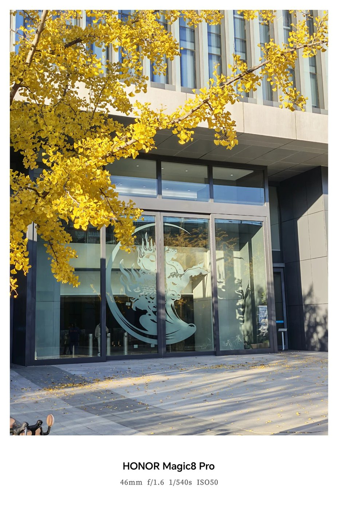
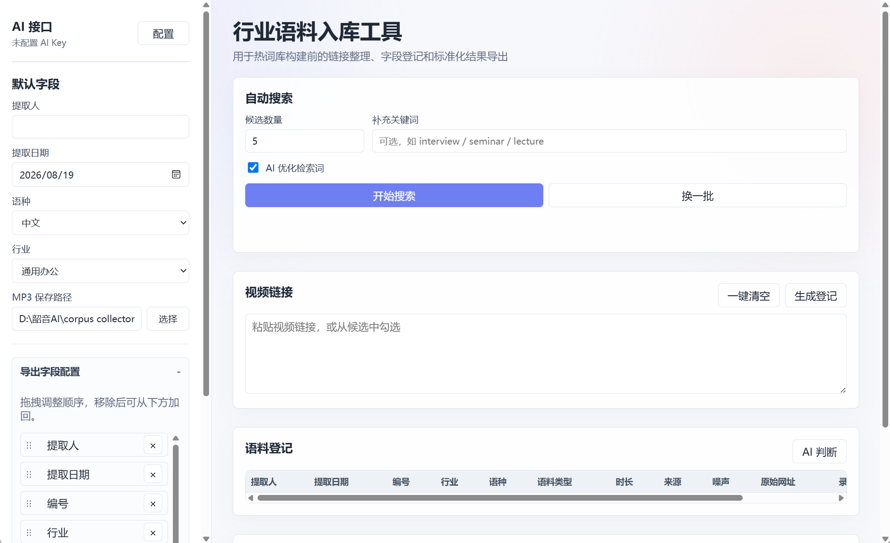
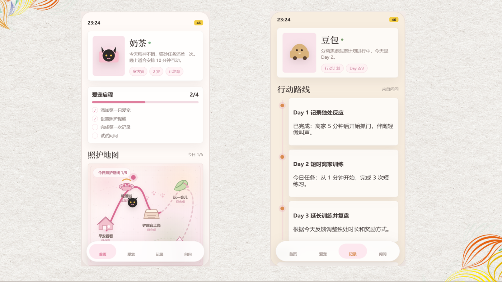

北京大学
汇丰商学院 · 经济学-金融工程双硕士
北大汇丰27届｜经济学&金融工程
韶音科技AI产品经理/百度AI大模型行业研究/TCL雷鸟创新战略
本科财政学，研究生读经济学 + 金融工程，"纯血经管人" ✨
希望做连接真实场景与用户需求的产品，就此开启互联网闯关之旅 ✈️
从 战略研究 到 AI产品，一路升级与成长
今天也在驯服AI，热衷于把脑海里奇奇怪怪的idea用AI落地
01 / LEARNING PATH
汇丰商学院 · 经济学-金融工程双硕士
风险管理学院 · 金融工程硕士

中国公共财政与政策研究院 · 财政学本科
02 / INTERNSHIP EXPERIENCE
AI 耳机「AI 总结摘要」项目
我参与韶音 AI 耳机「AI 总结摘要」项目，围绕行业总结模板策略、产品方案设计、Prompt Engineering、输出结构优化与评测迭代展开工作，推动 AI 总结摘要从基础摘要生成升级为结构化、场景化的产品能力。
AI 大模型 & 云计算行业研究
在百度智能云应用战略与运管组实习期间，我主要负责 AI 大模型 & 云计算行业研究，工作更偏向产品趋势、行业格局和商业化路径的前端判断。
03 / THE CREATOR

在AI摘要热词表语料库建设过程中，语料挖掘团队需要持续从公开视频平台中寻找合适的音频/视频素材，并依靠人工完成检索、筛选、下载、转码、标注和登记入库，存在操作分散、重复步骤多、入库效率低等问题。
因此，我设计并开发了Corpus Collector 语料挖掘助手，将语料采集流程整合为一个本地化工具，帮助团队提升语料挖掘效率。

Hi-Pet 是一款面向猫狗家庭的智能养宠助手，核心定位是“猫狗行为分析与照护计划助手”。
Hi-Pet 以长期宠物档案作为数据底座，将日常照护提醒与行为分析 Agent 连接起来：一方面帮助用户管理疫苗、驱虫、洗护、猫砂、遛狗等日常事项；另一方面在宠物出现乱尿、攻击、拆家、分离焦虑等行为问题时，结合宠物自身档案和具体场景进行结构化分析，并给出可执行的照护或训练计划。
04 / SKILLS & LIFE
牌堆里共有 6 张卡片
DRAWN FILE
DRAWN FILE
DRAWN FILE
DRAWN FILE
DRAWN FILE
DRAWN FILE
能力卡 / 01
Prompt Engineering把产品目标、输出结构、场景约束转化为模型可执行提示词。
评测体系构建关注稳定性、格式、专业性和可复用性，形成 Bad Case 迭代闭环。
AI Coding / Web Coding使用 Codex 快速搭建工具原型和可浏览网页作品。
能力卡 / 02
能力卡 / 03
办公常用Office、think-cell
Vibe CodingCodex
数据分析SQL、R、Python、VBA、Stata
能力卡 / 04
爱好卡 / 05
爱好卡 / 06